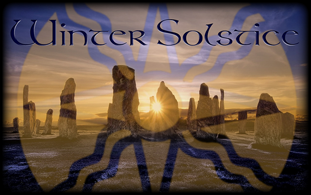
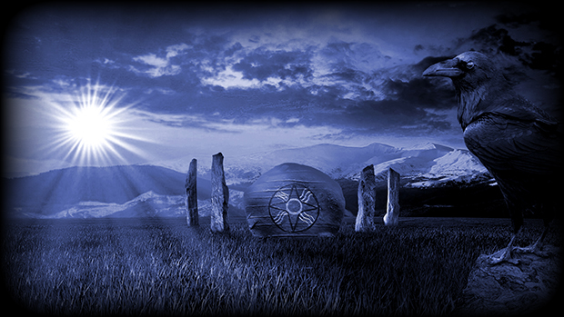
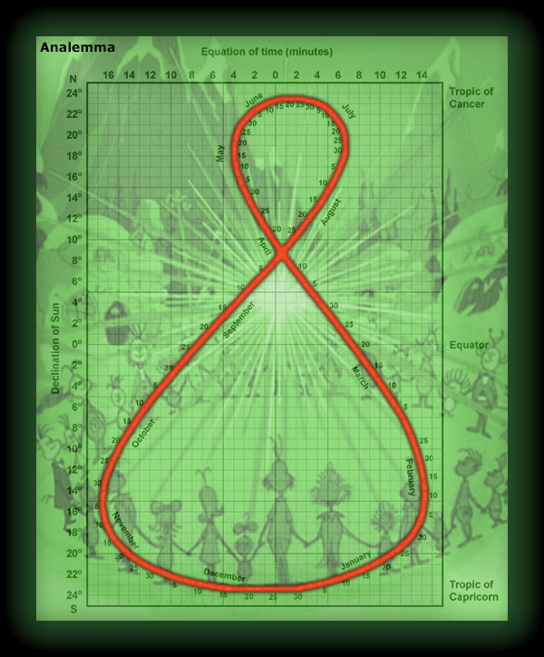

|
 The Earth's tilt creates our seasons as the north and south hemispheres alternate being closer to the sun. The effect slows near the time of the Solstice. Without a precise look, this slowing is perceived as stillness when the daily change in the declination of the sun is less than about 0.03 degrees (December 18-25). The oldest evidence showing humans had knowledge of the December Solstice comes from the Anatolian Hunter-Gatherers in 9400 BCE in what is now called Turkey. This was right after the last Ice Age. Starting about 7000 BCE, some of the Anatolians moved to western Europe. Over time, their descendants built prehistoric stone monuments across Western Europe that align with the Winter Solstice. Julius Caesar selected December 25th for the Winter Solstice, but the Julian calendar had inaccuracies. After calendar improvements, the 25th continued to be used because of cultural tradition with Sol Invictus which later transitioned to Christmas. In 2026, Winter Solstice is Monday, December 21 at 12:50 PM PST, and this is the Yuletide moment when the journey to warmer brighter days begins. May the sources of warmth and light in your life be more apparent in these colder darker days, and may you have a joyous Winter Solstice! Songs for Winter Solstice |
Winter Solstice Traditions and Customs

|
2026 Vernal Equinox Mar 20 7:46 AM PDT Summer Solstice Jun 21 1:24 AM PDT Autumnal Equinox Sep 22 5:05 PM PDT Winter Solstice Dec 21 12:50 PM PST more |

| This graph, called an
Analemma, shows how the declination of the sun barely changes near the
time of the December Solstice. Roughly, on average, the "stillness" (when the
daily angle change is below about 0.03 degrees) occures December 18-25. You might wonder why there is more "stillness" after the Solstice than before. It has to do with the Earth's orbit not being a perfect circle around the Sun. The Sun's gravitational pull causes the Earth to move faster when it's closer. This cycle is not in sync with the seasonal cycle created by the Earth's tilt. This is also why the Analemma figure-8 shape is skewed. You can create an Analemma yourself by repeatedly marking the precise location of the shadow from a stationary object outside. You have to mark the shadow position at the exact same time everyday for a year. Best if you select a time between noon and 1:00 PM, and use standard time all year, not daylight savings. You can also take filtered photographs of the Sun with a carefully positioned camera on a timer all year. |